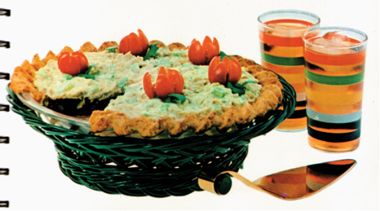

Home
About
Recipes

Tuna Jell-O Pie
Voilà, the “Summer Salad Pie” – basically this pie is made up of a lemon jello layer with tomato sauce, celery, olives and onion, in a cheese crust topped with tuna salad. Yes, tuna salad. "turkeysandwich.wordpress.com"
Learn More
Spaghetti-O Franks Cake
Learn More
Perfection Salad
Learn More